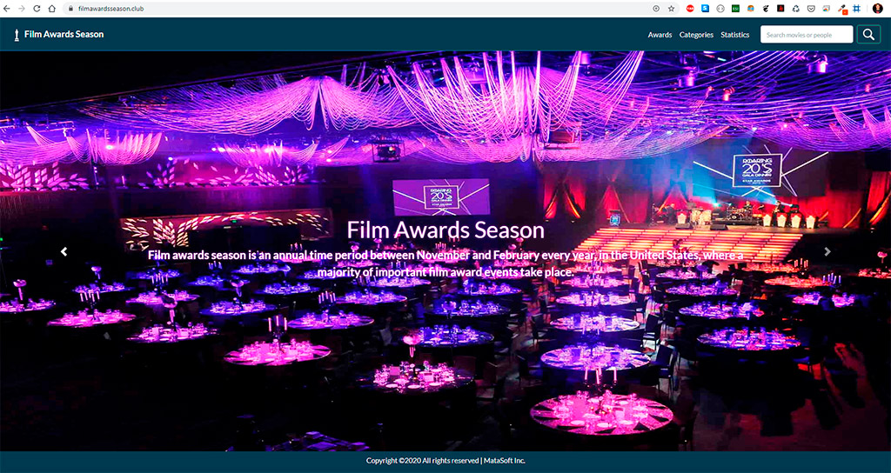
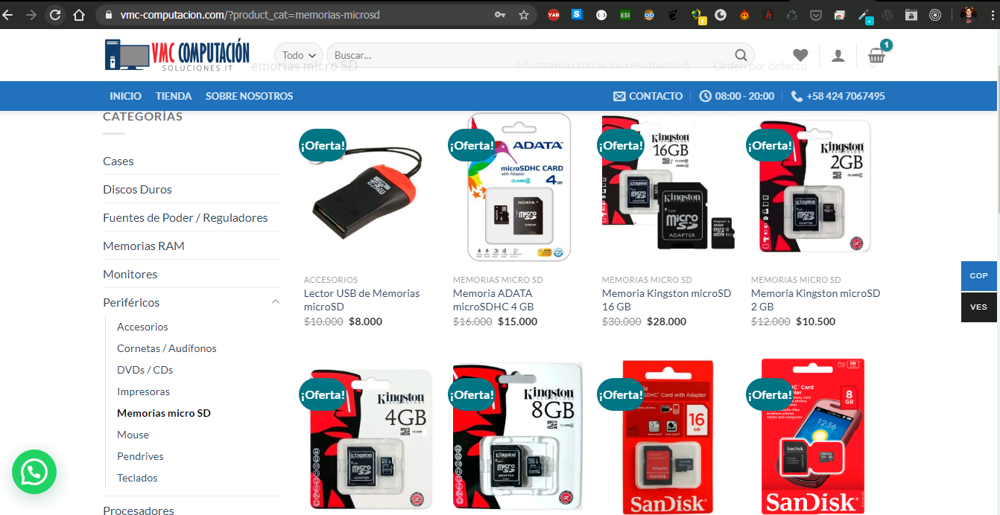

Vicente Mata
Hi! My name is Vicente Mata. I’m a Full Stack Web Developer and System Administrator. Passionate about web and mobile apps development, Restful APIs, taking into account the latest industry standards, trends and techniques, and use of open source technologies. I consider that self-learning, the ability to quickly obtain new knowledge and skills, persistence and perseverance, team work, and the enjoyment of my work are among my best qualities.
Full Stack Web Developer
Michelena, Venezuela
matavic25@gmail.com
+584247067495
Skills
HTML / CSS / Javascript
Angular
Node JS
MongoDB
PHP
MySQL
Laravel
Ionic
Wordpress
Linux
Docker
Soft Skills
Perseverance
Self-Learning
Team Work
Creativity
Commitment
Responsability
Languages
Spanish
English
Work Experience
Ionic Mobile Developer - Full Stack Javascript Developer / Binnet Inc.
Feb 2020 - Dec 2020
Mobile App Development using Web Technologies, Ionic / Cordova and NodeJS / Express / MySQL as Back End Technologies.
Ionic Mobile Developer / Freelancer
Sep 2019 - Current
Mobile App Development using Web Technologies and Ionic framework / Capacitor and Cloud Functions with NodeJS and MongoDB.
Full Stack Web Developer / Open Tecnología S.A.
Aug 2018 - Sep 2019
Frontend Web Development using Angular and Backend Web Development with PHP and Laravel Framework and MySQL Databases.
Back End Web Developer / Freelancer
Jul 2015 - Current
Backend Web Development with PHP and Laravel Framework and MySQL Databases.
System Administrator / VMC
Jan 2004 - Dec 2017
Installing and configuring software, hardware and networks. Monitoring system performance and troubleshooting issues. Ensuring security and efficiency of IT infrastructure.
PC Computer Repair Technician / VMC
Feb 1999 - Jan 2004
Building and assembling personal computers and servers. Diagnosing faulty hardware and troubleshooting software issues.
Education
Free Code Camp
2015-2016
Full Stack Web Development Certification, Computer Software Engineering
IUFRONT
2000-2003
T.S.U. Informática
Recent projects
Film Awards Season App
2019
App developed with Ionic Framework and Serverless Functions (NodeJS) on the backend.
 Film Awards Season - Google Play Store
Film Awards Season - Google Play Store
Film Awards Season Web
2019
Website developed with Angular Framework and Serverless Functions (NodeJS) in the backend.
 https://filmawardsseason.clubVMC Computación Hardware Retail Store
2020
Online Store developed with Wordpress and WooCommerce
 https://vmc-computacion.com